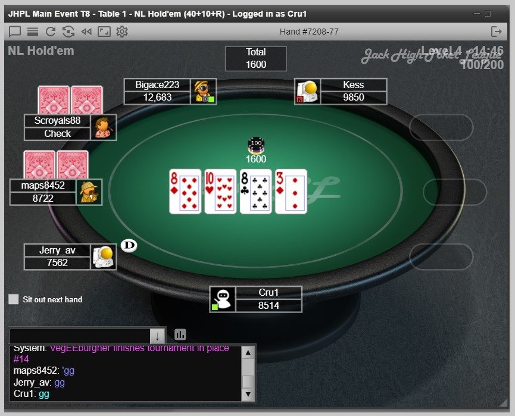
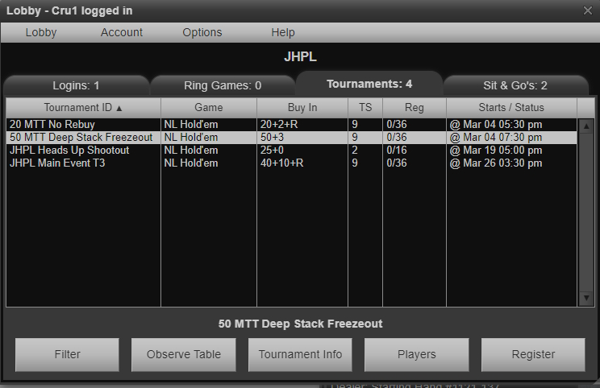

About Jack High Poker League
Welcome to the Jack High Poker League – a one-of-a-kind, members-only league designed for serious poker enthusiasts. This isn’t your average poker group. We are completely private and built on exclusivity, ensuring an elite experience for our players.
Why Join the Jack High Poker League?
- Invitation-Only Access: Play in a league that’s closed to the public and exclusive to our members.
- A Variety of Formats: Compete in Main Events, Deep Stack Tournaments, and Cash Games tailored for dedicated players.
- No Hidden Fees: We aren't in this to make money, we just do it for the love of the game.
- Elite Rewards: Climb our leaderboard, win prizes, and earn your spot in the End-of-Year Legacy Tournament.
- Private Platform: Play on our secure, custom poker server designed for an unparalleled experience.
New Player Bonus
Sign up today and receive 500 BONUS CHIPS for your first tournament! Experience the excitement risk-free as you dive into the action.
Request Access
How It Works
Joining the Jack High Poker League is straightforward but exclusive:
- Request Access: Fill out an invitation request and wait for approval.
- Admin Will Contact You: I like a personal touch. Once your request is recieved, Admin will text you to discuss details and answer questions.
- Set Up Your Account: Once approved, create your account on our private poker platform.
- Deposit Funds: Add funds to your account via Venmo or PayPal to start playing.
- Join the Action: Compete in our exclusive events and climb the leaderboard!
A Familiar Format
The Jack High Poker League provides a user-friendly platform that feels just like playing on well-known poker sites such as PokerStars – but with an exclusive, private touch. Here’s what you can expect:
In-Game Table View

Lobby View

Questions?
We’re here to help! Contact us at jackhighpokerleague@gmail.com for any inquiries.